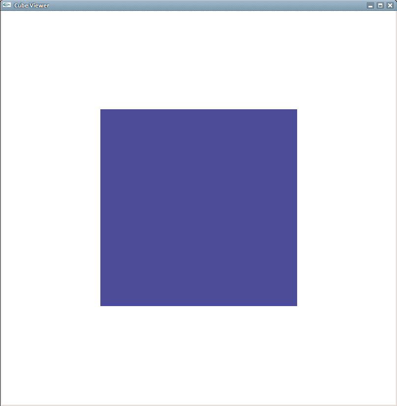
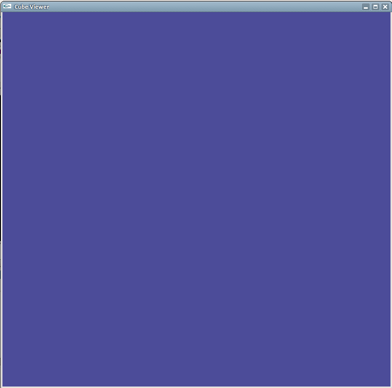
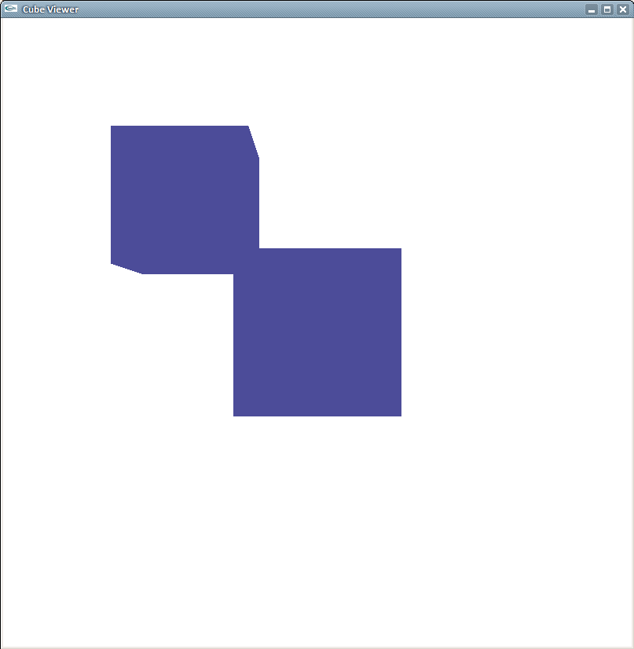
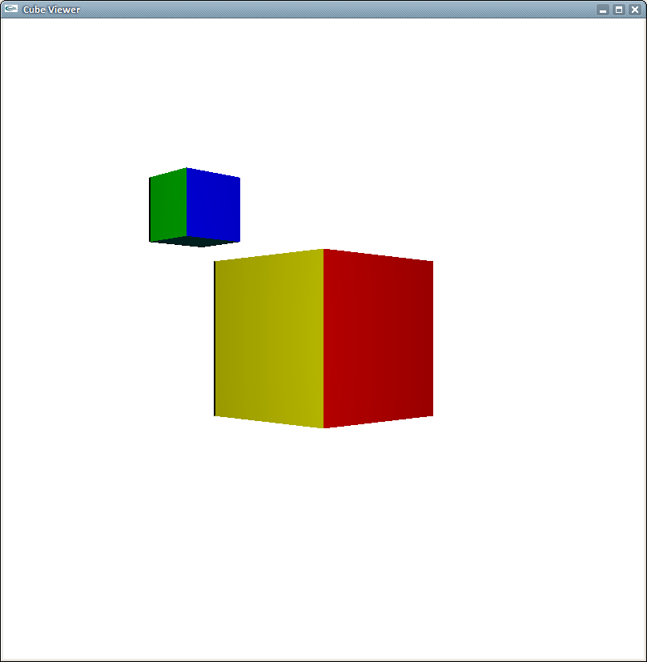
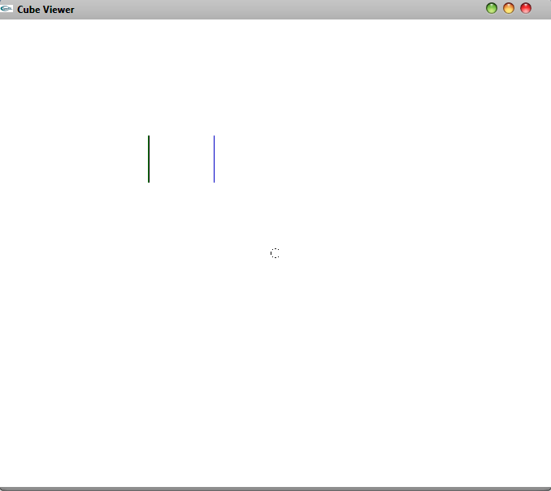
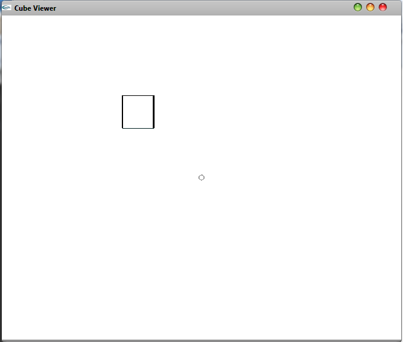
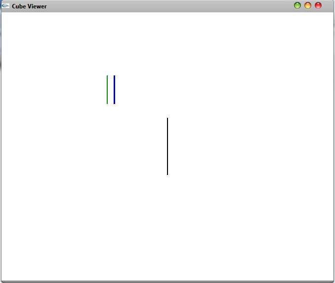
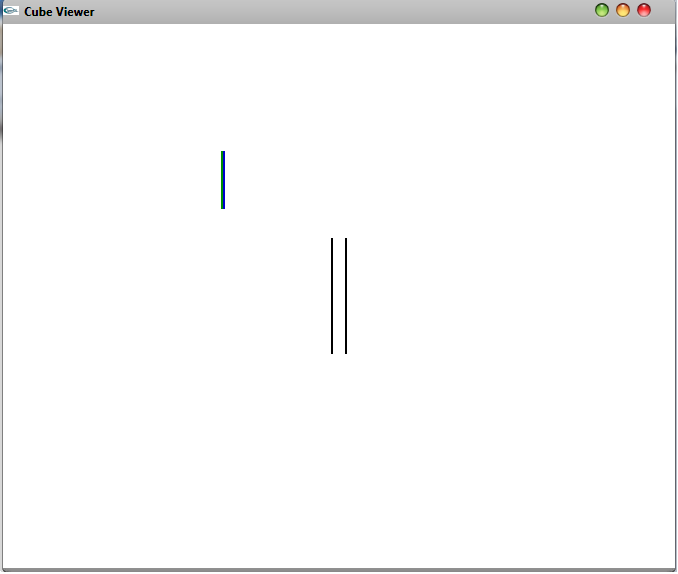
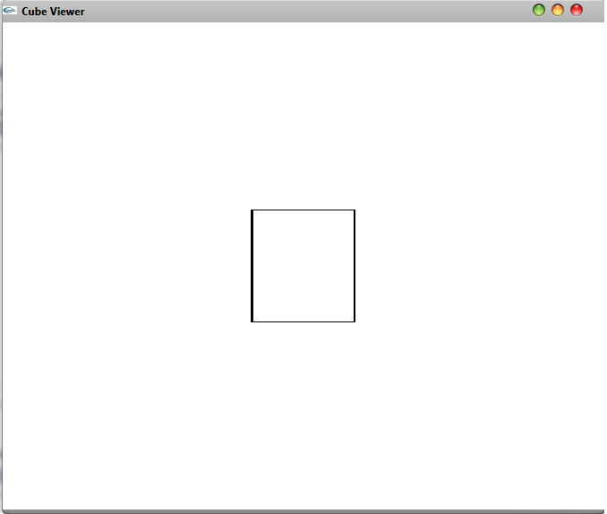
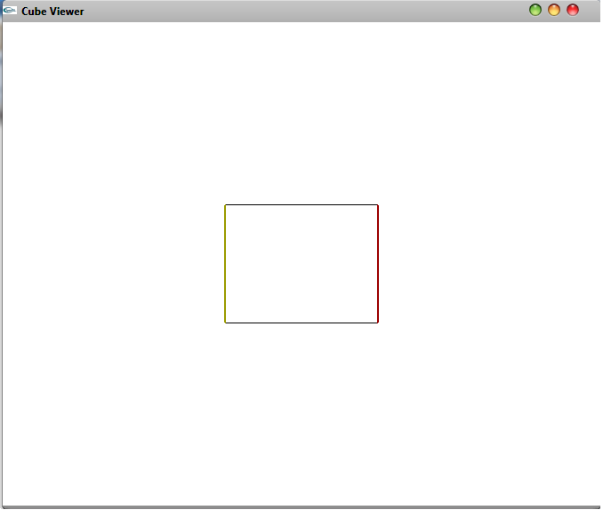

by Amos Wenger and Javier Martín de Valmaseda
Not much to say here, except that we added ostream overloading to Vector2, Vector3, Vector4 and Matrix4 to make it easier to debug.
The initial render looked something like this:

It was really not clear from the slides what to do in getScreenExtents() but we finally figured it out. When the projection matrix became correct, it looked like this:

For the translation we need to multiply the translate matrix to the transformationMatrix to get the final transformationMatrix.

We had to find out to use gl_Color and gl_Normal, the diffuse shader was really simple to do.
Scale was trivial. As for rotation, the slide were really helpful. We had to switch from atan(a / b) to atan2(a, b) because were getting INF/NANs

If we take a cross-section of the cube, we will see diferents shapes depend on the direction of the section, like squares and rectangles, lines.
Following the images of the clipping planes





